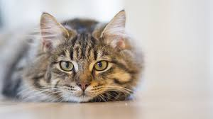

10 curiosidades sobre los gatos
Los gatos son las mascotas favoritas de Internet, pero también en millones de hogares de todo el mundo. Nunca dejan de sorprendernos con su simpatía y su peculiar comportamiento gatuno.
¡Empecemos con las curiosidades!
1. Los gatos tienen 230 huesos, los humanos tienen 206.

2.Todos los gatos recién nacidos tienen los ojos azules. Tardan varios meses en alcanzar su color definitivo.
3.los gatos huelen con un órgano, llamado de Jacobson, situado en la parte superior de la boca.
4. Alcanzan la madurez a los 5 años y su tercera edad sobre los 10 años.
5. Los gatos tricolores casi siempre son hembras: uno de cada 4.000 gatos tricolor es macho y suele ser estéril. Solo uno de cada 10.000 gatos tricolor es macho y fértil.
6. Su lengua está formada por diminutos»ganchos», que utilizan para atrapar y desgarrar el alimento.
7. Sus bigotes se caen periódicamente y vuelven a crecer. Su desaparición afecta al movimiento y al sentido de orientación del animal. Por eso, no hay que cortarlos.
8. Los estadounidenses gastan anualmente más dinero en comida para gatos que en comida para bebés.
9. El gato puede percibir sonidos aproximadamente dos octavos más altos que el hombre.
10. El ronroneo no siempre significa tranquilidad. El gato también ronronea cuando está enfermo o asustado, y se dice que lo hace para tranquilizarse a sí mismo.
Y para finalizar os voy a dejar un vídeo de gatos haciendo cosas de gatos xD enlace del vídeo